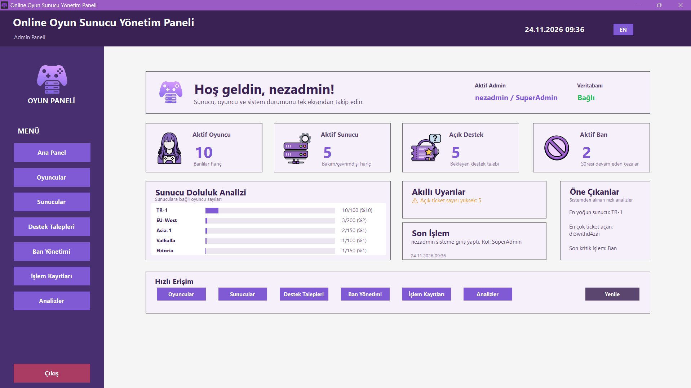
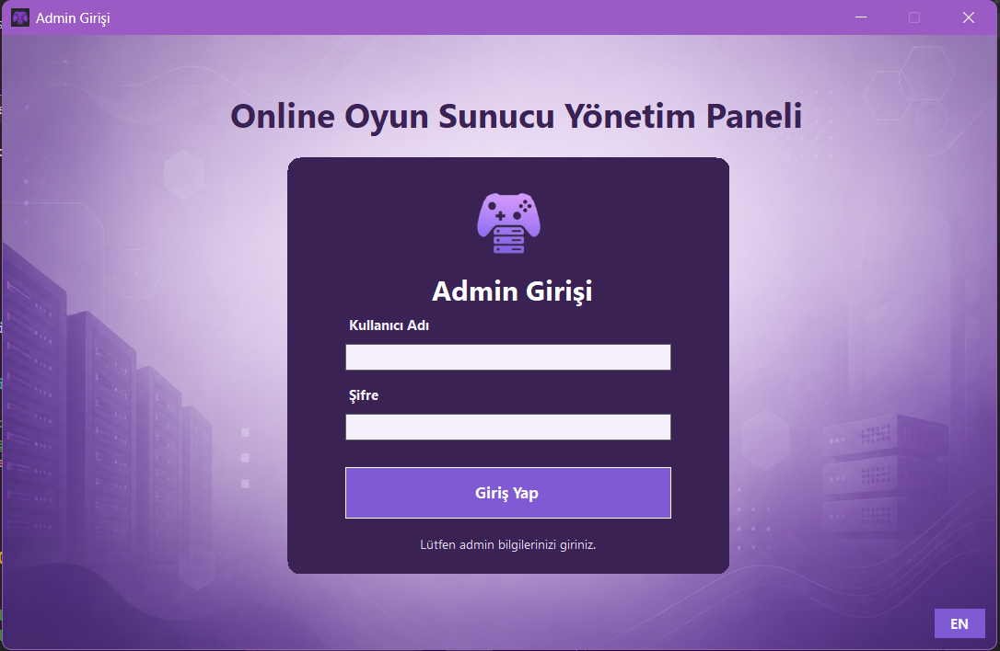
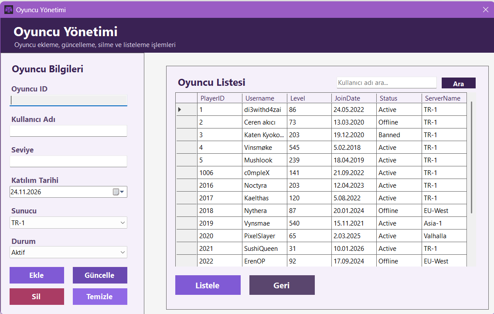
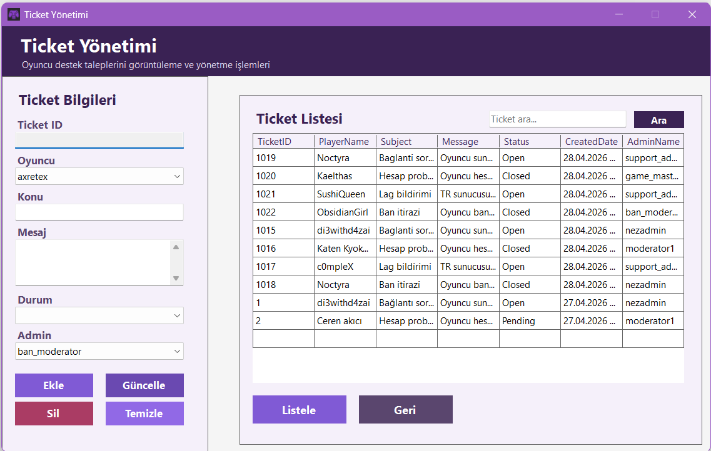
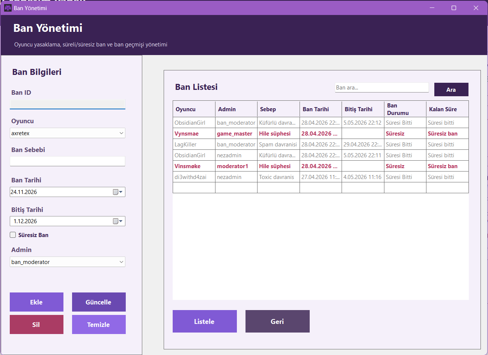
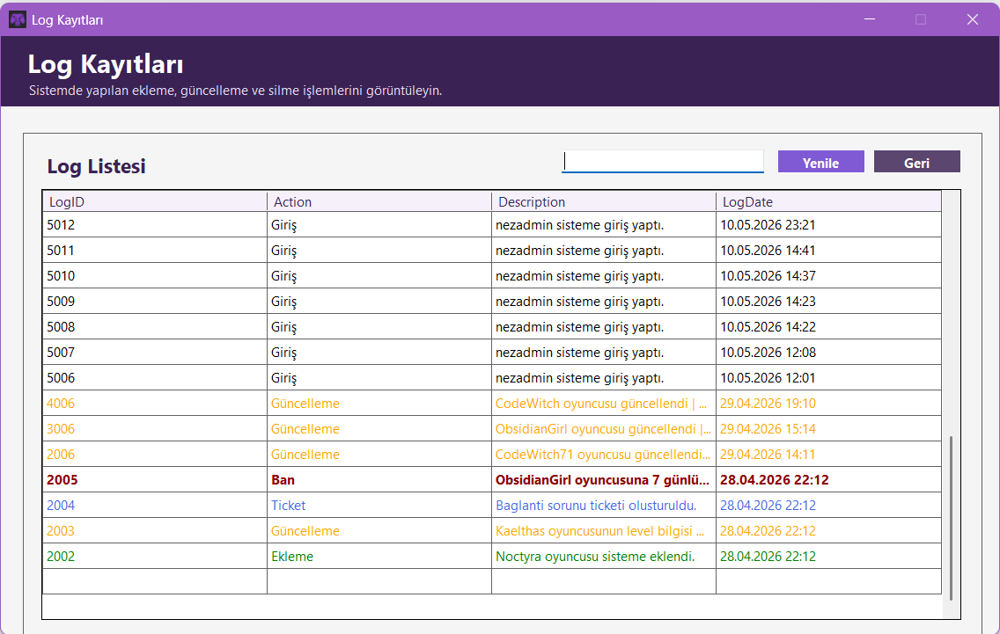

Online Oyun Sunucu Yönetim Paneli
C# Windows Forms uygulaması
C# ve Windows Forms ile geliştirdiğim bu masaüstü paneli, Online Oyun Sunucu Yönetim Sistemi veritabanına bağlanır. Ana panel bağlantı durumunu ve sistem özetini gösterir. Oyuncu ve sunucu kayıtları, destek talepleri, banlar, işlem kayıtları ve raporlar ayrı ekranlarda yer alır.
- Geliştirme durumu
- Durum bilgisi bekleniyor
- Teknolojiler
- Projedeki rolüm
- Masaüstü arayüzü geliştirme
Proje medyası












